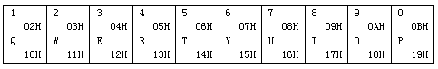

我们早已研究了如何通过21H或16H中断调用来取得按键的信息，但我们对这些信息究竟是如何产生的还一无所知，这一节我们就要更细致地讨论这个问题。那么首先我们把上一节留下的问题解决掉。
我们在前面编制过一个"TESTKEY"程序，下面这个程序是"TESTKEY"的一个升级版本：
TESTKEY2 .ASM
ESC_KEY equ 01h ；一个与ESC键有关的常量
code segment
assume cs:code
org 100h
main proc far
jmp continue ；跳过数据区
ascii db '0123456789ABCDEF' ；十六进制数对应的ASCII码
continue:
push cs ；通过堆栈将CS寄存器送入DS寄存器
pop ds
waitkey:
mov ah,0 ；等待键盘输入
int 16h
call out_ax ；调用OUT_AX子过程输出AX寄存器的值
cmp ah,ESC_KEY ；输入的是ESC键吗？
jnz waitkey ；不是ESC键则转WAITKEY继续
mov ah,4ch ；结束程序
int 21h
main endp
out_ax proc near ；OUT_AX子过程
push ax ；暂存AX寄存器
mov bx,offset ascii ；BX寄存器指向ASCII表
mov cx,0404h ；设置循环计数与移位计数
outloop:
rol ax,cl ；将AX寄存器的高4位移至低4位
mov dx,ax ；用DX寄存器暂存移位后的结果
and ax,000fh ；保留AX低4位（实际是移位前的高4位）
xlat ascii ；取得对应的ASCII码
mov ah,0eh ；利用10H中断的0EH功能
int 10h ；输出一个数字
mov ax,dx ；取回DX寄存器中的移位结果
dec ch ；循环计数减1
jnz outloop ；循环至OUTLOOP继续输出下一个数位
mov ax,0e0dh ；输出回车符
int 10h
mov al,0ah ；输出换行符
int 10h
pop ax ；恢复AX寄存器
ret ；返回
out_ax endp
code ends
end main
这个程序不仅可以显示出按键的ASCII码，还可以显示出16H中断的0号功能在AH寄存器中返回的数据。运行这个程序，会发现AH寄存器中的数据与所按键的ASCII码好象并无关系，比如按下打字键盘上的数字"1"键，可以看到AX寄存器返回的数据是0231H，其中31H是按键的ASCII码；如果按住Shift键再按下数字"1"键，此时AX寄存器返回0221H，21H是"!"的ASCII码，而AH寄存器中的数据竟然没变；如果按下右边数字小键盘上的"1"，就会看到AX寄存器中返回4F31H，31H仍是"1"的ASCII码，而AH寄存器中的数据却变成了4FH。
如果我们暂时给AH寄存器中的数据命名为"幻码"的话那么我们现在就可以总结出这样两条规律：
（1）Shift键可以改变同一按键的ASCII码，但同一键的"幻码"固定不变；
（2）分在不同键区的同名键具有相同的ASCII码，但具有不同的"幻码"。这个规律是否绝对，我们可以按下其它的键来检验，最后我们可以发现这个规律对于大多数键来讲是正确的，个别的一些键无此规律。
那么就"幻码"本身而言，各个键所对应的"幻码"有没有什么规律呢？我们再次运行这个程序，然后由"1"至"0"顺次按下打字键区中的数字键，再由左至右顺次按下第一行字母键，看看是否得到了下面的结果：
